Historical and reference coats of arms


Copenhagen
Guide. Places in this edition: 33.
OTIUM is the practice of deliberate leisure. In the classical sense, otium is not escape from work but time when attention returns to memory, landscape, and thought — without a utilitarian deadline.
We shape routes for lingering, not for checklist tourism. The goal is presence in a place rather than consumption of sights.
OTIUM is not a tour operator. It is an invitation to walk, pause, and leave a route unfinished if the light on a façade deserves another minute.
Historical and reference coats of arms
Guide. Places in this edition: 33.

Queen's winter residence of four identical palaces around equestrian statue of Frederik V. Changing of the guard marches from Rosenborg at midday. Two palaces open as museums on rotation.
Planned after Christiansborg fire; royal family adopted the square in 1794. Working monarchy hub facing the opera across the harbour.
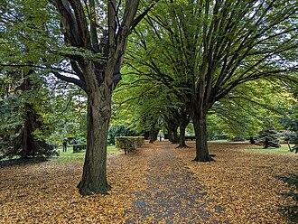
Assistens Cemetery is a cemeteries in Copenhagen. Photo tags: copenhagen, river, denmark, scandinavia. Reference image context: https://pixabay.com/photos/copenhagen-river-denmark-8513129/.
Public photo archives associate this site with: copenhagen, river, denmark, scandinavia. Worth a stop when exploring Copenhagen.
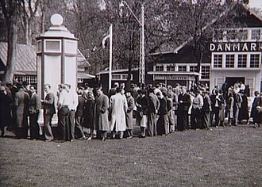
Bakken amusement park is a parks in Copenhagen. Photo tags: carousel, carnival, amusement ride, merry-go-round. Reference image context: https://pixabay.com/photos/carousel-carnival-amusement-ride-168125/. Public photo archives associate this site with: carousel, carnival, amusement ride, merry-go-round.
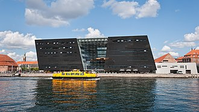
Black Diamond library is a libraries in Copenhagen. Photo tags: black diamond, library, denmark, symmetry. Reference image context: https://pixabay.com/photos/black-diamond-library-denmark-4541795/. Public photo archives associate this site with: black diamond, library, denmark, symmetry.
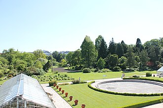
Botanical Garden is a parks in Copenhagen. Photo tags: artemis, statue, university, copenhagen. Reference image context: https://pixabay.com/photos/artemis-statue-university-883971/. Public photo archives associate this site with: artemis, statue, university, copenhagen.

Brandmuseet is a museums in Copenhagen.

Christiansborg Palace (Danish: Christiansborg Slot, pronounced [kʰʁestjænsˈpɒˀ ˈslʌt, kʰʁæs-]) is a palace and government building on the islet of Slotsholmen in central Copenhagen, Denmark. It is the seat of the Danish Parliament (Folketinget), the Danish Prime Minister's Office, and the Supreme Court of Denmark. Also, several parts of the palace are used by the Danish monarch, including the Royal Reception Rooms, the Palace Chapel and the Royal Stables.

Island palace housing Folketinget, royal reception rooms, and ruins of medieval bishops' castle. Tower viewpoint requires free timed ticket mornings. Royal stables museum sits in the northern wings.
Two earlier palaces burned; Thorvald Jørgensen's design reused foundations. Rare single site bundling all three Danish powers.
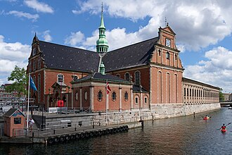
Church of Holmen is a places of worship in Copenhagen. Photo tags: opera, nature, island of holmen, holmen. Reference image context: https://pixabay.com/photos/opera-island-of-holmen-holmen-port-4713119/. Public photo archives associate this site with: opera, nature, island of holmen, holmen.

National opera across the harbour from Amalienborg with a cantilevered roof and public foyer walks. Harbour bus links Nyhavn to the front plaza. Backstage tours run on selected summer dates.
A.P. Møller foundation gift anchored Holmen's cultural redevelopment. Modern counterweight to historic palace axis.
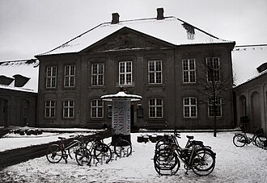
Designmuseum Denmark is a museums in Copenhagen.

Frederik's Church is a places of worship in Copenhagen. Photo tags: frederik's church, church, copenhagen, dome. Reference image context: https://pixabay.com/photos/frederiks-church-church-copenhagen-4788190/. Public photo archives associate this site with: frederik's church, church, copenhagen, dome.

Copper-green dome church facing Amalienborg axis, inspired by St Peter's proportions. Crypt concerts use the vault acoustics. Dome climb tickets sell fewer than the tower text suggests.
Eigtved's expensive marble scheme stalled for a century before completion. Visual closure at the end of the Frederiksstaden axis.

Car-free commune of workshops, vegetarian eateries, and lakeside paths on former barracks land. Main drag photography rules can change—read entry signs. Bike access is easier than driving to nearby streets.
Activists opened fences to artists and dropouts; decades of negotiation followed. Europe's best-known autonomous neighbourhood experiment.
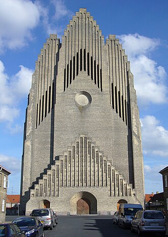
Grundtvig's Church is a places of worship in Copenhagen. Photo tags: grundtvig's church, church, cathedral, religion. Reference image context: https://pixabay.com/photos/grundtvigs-church-church-cathedral-2479332/. Public photo archives associate this site with: grundtvig's church, church, cathedral, religion.
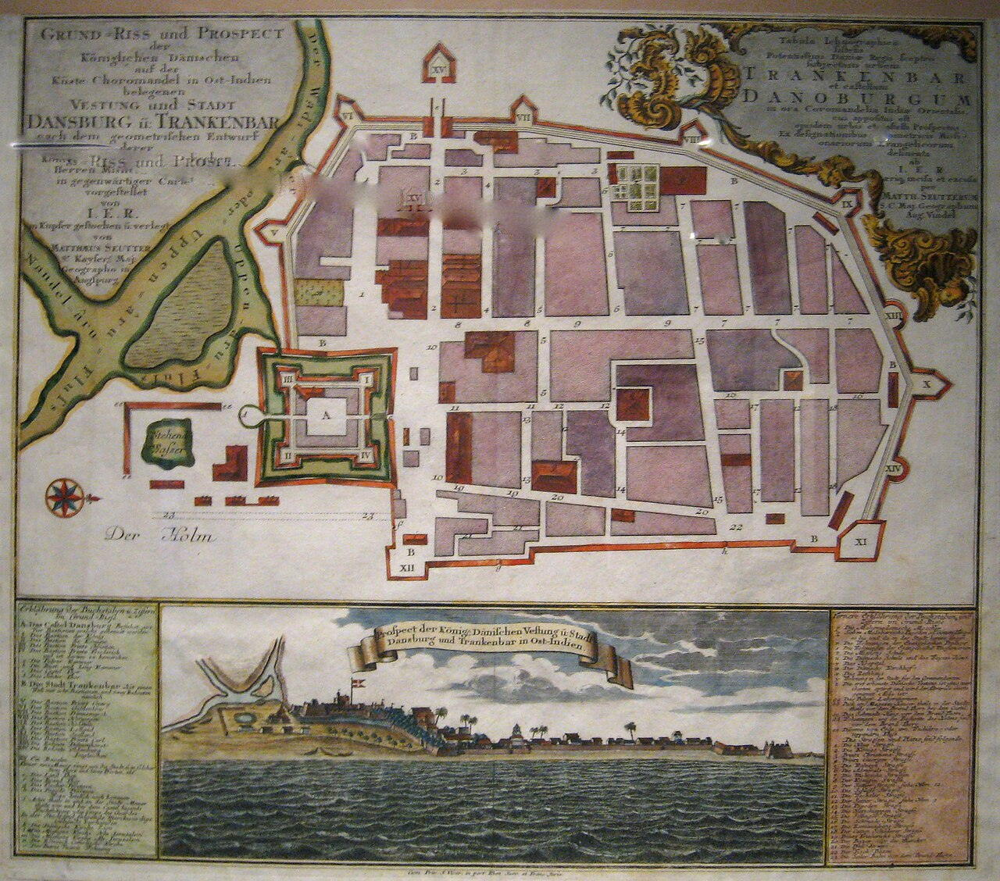
Historic map Tranquebar is a landmarks in Copenhagen. Photo tags: copenhagen, denmark, architecture, landmark. Reference image context: https://pixabay.com/photos/copenhagen-denmark-architecture-4052654/. Public photo archives associate this site with: copenhagen, denmark, architecture, landmark.

ImamAliMoskeCph is a places of worship in Copenhagen.
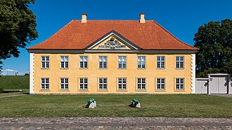
Kastellet fortress is a landmarks in Copenhagen. Photo tags: copenhagen, denmark, architecture, old. Reference image context: https://pixabay.com/photos/copenhagen-denmark-architecture-old-3749917/. Public photo archives associate this site with: copenhagen, denmark, architecture, old.
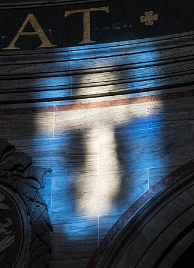
Marble Church is a places of worship in Copenhagen. Photo tags: church, marble, copenhagen, building. Reference image context: https://pixabay.com/photos/church-marble-copenhagen-building-4775207/. Public photo archives associate this site with: church, marble, copenhagen, building.


Brewery heir's gift of antiquities and French sculpture centred on a glass winter garden. Coffee in the palm court is a quiet mid-tour break. Danish Golden Age paintings occupy upper floors.
Carl Jacobsen funded successive wings to house expanding casts and marbles. Mediterranean sculpture meets Copenhagen civic pride.

Harbour promenade of cafés and canal boats; house #20 marks Hans Christian Andersen's lodgings plaque. Harbour bus H9 links Nyhavn to Opera House without walking back. Evening seat heaters extend outdoor dining into cool seasons.
Digging a back-port for Kongens Nytorv created a sailors' strip later gentrified into tourism spine. Copenhagen's postcard human scale beside taller Amalienborg axis.

Twin squares where the old city hall stood; today court building arcades and café terraces. Christmas market fills the cobbles in December. Pedestrian Strøget links Stroget crowds north toward Round Tower.
Public punishments once drew crowds; modern use is overwhelmingly civic and social. Legal heritage façades amid shopping traffic.
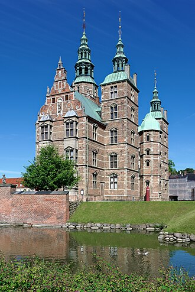
Rosenborg — Wikimedia disambiguation page.

Rosenborg Castle is a palaces in Copenhagen. Photo tags: rosenborg castle, copenhagen, denmark, castle. Reference image context: https://pixabay.com/photos/rosenborg-castle-copenhagen-denmark-4696851/. Public photo archives associate this site with: rosenborg castle, copenhagen, denmark, castle.

Royal treasury of crowns and ivory narwhal throne in compact turreted palace surrounded by King's Garden lawns. Winter rose house in the gardens opens on reduced hours. Lockers required for backpacks before crown room circuit.
Christian IV's pleasure house became a museum of absolutist regalia under later constitutional kings. Best single-room encounter with Danish golden-age craftsmanship.
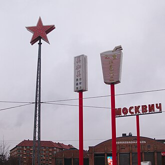
Superkilen park is a parks in Copenhagen. Photo tags: kileparken, superkilen, stripes, white. Reference image context: https://pixabay.com/photos/kileparken-superkilen-stripes-white-2381021/. Public photo archives associate this site with: kileparken, superkilen, stripes, white.

Small bronze based on Andersen's tale, endlessly photographed despite its modest size on the cruise-ship walk. Crowds peak when multiple ships berth at Oceankaj. Vandalism history means occasional off-site display for repairs.
Brewer Carl Jacobsen commissioned the figure after seeing a ballet adaptation of the fairy tale. Denmark's most polarising 'must-see' minute sculpture.

Equestrian spiral ramp leading to a platform observatory and library hall—no stairs until the final lantern ladder. Trinity Church organ concerts sometimes resonate up the brick cylinder. Winter ice sometimes closes the upper outdoor deck.
Christian IV's astronomical tower supported Tycho Brahe's instrument legacy in university orbit. Europe's oldest functioning observatory structure still open to casual climbs.
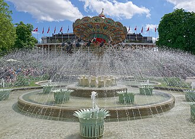
Tivoli Gardens is a parks in Copenhagen. Photo tags: fireworks, tivoli, copenhagen, night. Reference image context: https://pixabay.com/photos/fireworks-tivoli-copenhagen-night-4860729/. Public photo archives associate this site with: fireworks, tivoli, copenhagen, night.

Seasonal amusement park with wooden coaster, Friday fireworks, and concert hall hosting pop and classical bills. Multi-ride wristbands beat token queues on busy Saturdays. Halloween and Christmas markets re-skin the lanes completely.
Georg Carstensen persuaded Christian VIII that 'when people amuse themselves, they forget politics'. Walt Disney cited Tivoli as an inspiration for Disneyland's mix of gardens and rides.
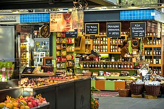
Torvehallerne market is a markets in Copenhagen. Photo tags: amalienborg palace, copenhagen, denmark, market square. Reference image context: https://pixabay.com/photos/amalienborg-palace-copenhagen-954884/. Public photo archives associate this site with: amalienborg palace, copenhagen, denmark, market square.
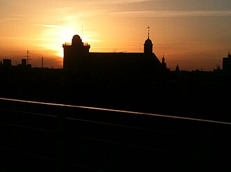
The Trinitatis Church (Trinitatis Kirke) is located in central Copenhagen, Denmark. It is one of the best examples of Gothic Survival architecture in Denmark part of the 17th century Trinitatis Complex, which includes the Rundetårn astronomical observatory tower and the Copenhagen University Library, in addition to the church. Built in the time of Christian IV, the church initially served the students of Copenhagen University.